Introduction to Visual Computing · Image Processing
Edge Detection
A complete visual walkthrough of Lecture 6 — from intensity gradients to Canny, the Laplacian family and template matching. Every kernel, grid and pipeline is interactive.
Terence MorleySchool of Computer ScienceThe University of ManchesterLecture 6.1 – 6.3
00 — OVERVIEW
What this chapter covers
The goal is a deeper understanding of edge detection. We build up from the raw idea of an intensity gradient to a sequence of progressively smarter detectors.
Gradient methods
Intensity gradients
Roberts cross
Prewitt & Sobel
Smart detection
Canny edge detector
Laplacian of Gaussian
Difference of Gaussians
Matching
Cross-correlation
Template matching
Toward feature detection
DefinitionAn edge is an extended, significant, local change in image intensity. Not a single pixel — something larger and meaningful.
The motivating demo in the lecture is a motorway video: run a Canny detector on each frame to outline cars, then use image averaging / subtraction to remove the static background (road lines, central barrier) so only the moving cars remain. You can play with a real detector in the Edge-Detector Lab below.
01 — INTENSITY GRADIENTS
Gradients
For a pixel I₀ we take signed differences to its right and below to get horizontal and vertical gradients.
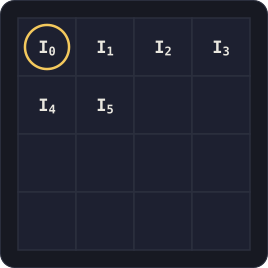
Region of an image — gradients measured at I₀
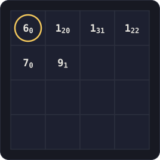
Worked example values
δx = I1 − I0 δy = I4 − I0
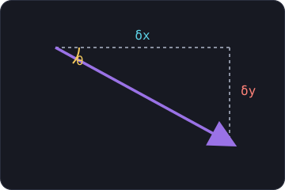
Gradient vector ∇, magnitude M and direction θ
∇ = [ δx , δy ]T
M(x,y) = √( δx2 + δy2 )
θ(x,y) = tan−1( δy / δx )
Live gradient calculator
Change the intensities and watch δx, δy, magnitude and direction update.
Crucial noteThe pixel gradient vector is perpendicular to the edge — it is an edge normal, not the edge direction itself.
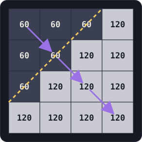
The dashed line is the edge; purple arrows are the gradient (edge normals)02 — CONVOLUTION REFRESHER
Sliding the kernel
Edge operators are convolution kernels. We slide the kernel across the image, multiply overlapping values, and put the sum in the centre pixel.
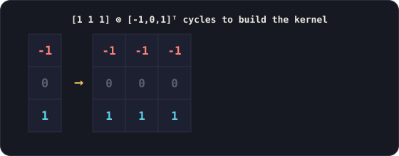
Cycling a 1×3 vector across then down builds the full kernel
Convolution playground — Prewitt vertical kernel
Step the 3×3 window across this little image (dark on the left, light on the right — a vertical edge). Watch the multiply-accumulate land in the output. Strong values appear right on the edge.
image I
kernel W
output I′
03 — ROBERTS CROSS
Roberts cross edge detector
Proposed by Lawrence Roberts (1963). The simplest detector — two 2×2 diagonal kernels.
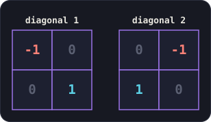
Two diagonal 2×2 kernels
Simplest edge-detector kernel.
Awkward localisation — the edge sits on the joint between the four pixels, so it can't be stored at a pixel.
Noise sensitive — if one pixel is corrupted, the edge strength is equally corrupted.
Combine the two diagonal responses by magnitude (√ of the sum of squares) to get all edges. See it run on a synthetic scene in the Lab.
04 — PREWITT OPERATOR
Prewitt operator
Judith M. S. Prewitt (1970). A 3×3 kernel that localises the edge at the centre pixel and is more robust to noise.
Horizontal and vertical 3×3 kernels
Why does Prewitt reduce noise?
Because the kernel is separable — it factors into an averaging (smoothing) filter and an edge detector. The smoothing along the rows is what removes noise.
[1 1 1] ⊗ [-1 0 1]ᵀ = the Prewitt kernel
Compared with RobertsIn the noise test, Prewitt noise appears reduced and Prewitt edges are two pixels wide, whereas Roberts edges are one pixel wide.
Aside: Prewitt edges → negative → threshold gives a neat "pencil-sketch" simplification of a photo.
05 — SOBEL OPERATOR
Sobel operator
Irwin Sobel (1968). Almost identical to Prewitt, but it uses a weighted average (1 2 1), giving more emphasis to the central pixel.
Results are very similar to Prewitt; thresholded at 50 the two are hard to tell apart. Try switching between Roberts, Prewitt and Sobel in the Lab to see the family resemblance.
06 — GAUSSIAN BLUR (REMINDER)
Smoothing before detection
Edge operators amplify noise, so we often blur first. The Gaussian is the standard choice — and it doesn't introduce ringing at discontinuities (Gibbs phenomenon).
G(x,y) = 12πσ2 · e−(x2+y2)/2σ2
σ can differ in x and y to blur by different amounts in each direction (circular or elliptical blur).
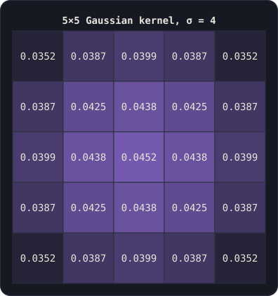
5×5 Gaussian kernel, σ = 4 (cell shade ∝ weight)
EffectSobel on a raw photo = noise everywhere. Sobel on a Gaussian-blurred photo = real edges emerge. Toggle Pre-blur in the Lab to feel the difference.
07 — CANNY EDGE DETECTOR
Canny edge detector
John F. Canny (1986). Not just an operator — a detector that uses extra information to decide a pixel really lies on an edge.
Good detection
Find as many true edges as possible, and don't falsely detect edges.
Good localisation
A detected edge point should sit on the centre of the edge.
Single response
A given edge should be marked only once.
The Canny pipeline — step through it
live preview
Classifying edge directions
Each gradient direction θ is quantised into one of four categories. Drag the dial: every angle and its opposite map to the same edge.
Direction-quantisation dial
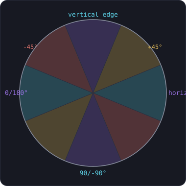
gradient normal: 0°
0° 359°
classified as
Non-maxima suppression neighbourhood
Edge thinningFor each pixel in M, find its direction; look at the 8 neighbours. If two or more neighbours in the same direction have a higher magnitude → Mthin = 0, otherwise keep the magnitude. This leaves one-pixel-wide ridges.
Double thresholding & hysteresis
Below TL → not an edge. Between TL and TH → weak. Above TH → strong.
Build binary MS (≥ TH) and MW (≥ TL), then MW = MW − MS.
Assume strong pixels are real; for each strong pixel, promote any weak 8-neighbour. This links edges and fills gaps.
Versus Sobel, Canny is less noisy, mostly one pixel wide, and far more connected — clearest on the Jackie Chan and retina examples in the slides, and reproducible in the Lab.
08 — LIVE LAB
Edge-Detector Lab
A real edge-detection engine running in your browser on a synthetic "cabin in the woods" scene (it stands in for the slide photos). Add Gaussian noise, pre-blur, switch operators and slide the threshold.
Operators run for real on the pixels
noise σ 0threshold 60
input scene
Try: crank noise up with Sobel (messy) → switch on Pre-blur (cleaner) → compare with Canny (clean, connected, thin). That's the whole arc of the chapter in one panel.
09 — LAPLACIAN
The Laplacian
A second-derivative operator. A single kernel finds edges in all directions at once — the edge is the zero-crossing between a positive and a negative response.
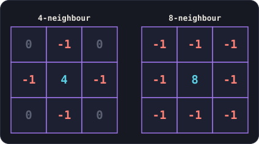
4-neighbour and 8-neighbour Laplacian kernels
Performs the second derivative; the zero-crossing locates the edge.
Roberts/Prewitt/Sobel each need two kernels (one per direction); the Laplacian needs only one.
But it highlights noise strongly — which leads straight to the Laplacian of Gaussian.
10 — LoG · MARR-HILDRETH · DoG
Laplacian of Gaussian & friends
Blur away the noise first, then take the Laplacian. Two related techniques follow.
Laplacian of Gaussian (LoG)
Blur the image with a Gaussian, then convolve with a Laplacian (and threshold). On the retina image, much lower thresholds (5, 10) now give clean, strong vessels because the noise is gone.
Marr-Hildreth (1980)
Do the LoG with signed arithmetic, then mark zero-crossings as edges. Pixel e is an edge pixel if there is a differing sign on any opposite pair: b/h, d/f, a/i, c/h.
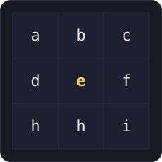
Opposite-pair sign test around centre pixel e
Difference of Gaussians (DoG)
Blur the image with two different sigmas (e.g. σ=3 and σ=1) and subtract one from the other. It approximates the LoG and finds edges well — not quite as clean as Canny, but cheap. Switch the Lab to DoG to see it.
Aside — JPEG artefactsRunning a Laplacian on an over-compressed retina image revealed noise arranged in 8×8 blocks. These are JPEG artefacts: JPEG runs a Discrete Cosine Transform on 8×8 blocks and discards high frequencies. Over-compress and the block structure appears — and edge detectors then "find" it.
11 — TEMPLATE MATCHING
Template matching
Can we automatically find a small template (a 116×126 face) inside a large 1280×1312 image? Use cross-correlation.
What we call convolution in image processing is actually cross-correlation — the kernel is not flipped:
I′(x,y) = ΣΣ W(s,t) · I(x+s, y+t)
Convolution flips the kernel (negatives in the index); correlation keeps it. Cross-correlation measures similarity between two signals — here a template and an image. (Hence "template", "kernel" and "mask" all describe the same thing.)
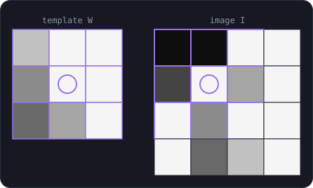
Slide the template W over image I; sum into the centre pixel
Normalisation is essentialThe raw sum is largest over a white region (all 255) — a false alarm. So divide by the region sum:
I′(x,y) = ΣΣ W(s,t) I(x+s,y+t)ΣΣ I(x+s,y+t)
Template scan — normalised correlation
A 3×3 template is hidden inside this image. Scan the window across; the normalised score peaks exactly at the hidden patch.
image I
template
…but it isn't as good as it looksThe template was cut from the same image, so it matches exactly. Rotate it slightly and the match can fail. Feature detection (interest points + descriptors) gives far more robust matching — the next topic.
12 — CHECK YOURSELF
Quiz
20 questions taken from the course quiz bank (Visual_quizes.docx) — the edge-detection, convolution, smoothing and template-matching set. Pick an answer to lock it in and reveal the explanation.
Score
13 — EXAM-STYLE QUESTIONS
Exam practice
Open-ended questions in the style typically asked on this material. (No past-paper file was attached; these are representative of the topic. Click to reveal a model answer.)
gradientsState the definition of an edge and explain why the gradient is called an edge normal.
An edge is an extended, significant, local change in image intensity. The gradient vector ∇ = [δx, δy]ᵀ points in the direction of greatest intensity change, which is perpendicular to the edge it lies on — hence "edge normal". Its magnitude √(δx²+δy²) gives edge strength and tan⁻¹(δy/δx) its orientation.
roberts/prewittGive the Roberts and Prewitt kernels and contrast them on localisation, noise and edge thickness.
Roberts: two 2×2 diagonal kernels [[-1,0],[0,1]] and [[0,-1],[1,0]]. Prewitt: 3×3 [[-1,-1,-1],[0,0,0],[1,1,1]] and its transpose. Roberts localises awkwardly on the joint of four pixels, is noise-sensitive, and gives one-pixel edges. Prewitt localises at the centre pixel, is more noise-robust (it separates into a smoothing filter ⊗ an edge detector), but gives two-pixel-wide edges.
separabilityShow that the Prewitt kernel is separable and explain why this reduces noise.
[-1,-1,-1;0,0,0;1,1,1] = [1 1 1] ⊗ [-1 0 1]ᵀ. The [1 1 1] term is an averaging filter that smooths along the rows; the [-1 0 1]ᵀ term is the vertical-difference edge detector. The smoothing component averages out random noise before differencing, so spurious high-frequency pixels are suppressed. (Sobel is the same with weighted averaging [1 2 1].)
cannyList Canny's three design criteria and describe the five stages of his algorithm.
Criteria: (1) detect as many true edges as possible with no false edges; (2) localise on the centre of the edge; (3) mark each edge once. Stages: (1) Gaussian smoothing; (2) gradient magnitude M and direction θ via an operator such as Sobel; (3) quantise θ into 4 directions and apply non-maxima suppression to thin edges; (4) double thresholding into strong (≥T_H) and weak (≥T_L) maps; (5) hysteresis — keep strong pixels and promote connected weak pixels to link edges. T_H ≈ 2–3×T_L.
cannyExplain non-maxima suppression and why it is needed.
For each pixel in the magnitude image, read its quantised gradient direction and inspect its 8 neighbours. If two or more neighbours in the same direction have a higher magnitude, the pixel is not a local maximum across the edge, so set M_thin = 0; otherwise keep its magnitude. This thins thick gradient ridges to one-pixel-wide edges, satisfying the "mark once / good localisation" criteria.
laplacianWhy does a single Laplacian kernel suffice for edge detection, and what is its main weakness? How is it fixed?
The Laplacian is a second derivative that responds to intensity change in all directions, so one kernel (4- or 8-neighbour) finds edges via the zero-crossing between positive and negative responses — unlike gradient operators that need two directional kernels. Its weakness is strong noise amplification. Fix: Laplacian of Gaussian — blur with a Gaussian first, then apply the Laplacian (Marr-Hildreth marks the signed zero-crossings).
log/dogDistinguish Laplacian of Gaussian from Difference of Gaussians.
LoG: convolve a Gaussian-blurred image with a Laplacian kernel (one image, two operations). DoG: blur the image with two different sigmas (e.g. 3 and 1) and subtract one blurred image from the other. DoG approximates LoG and is cheaper; both suppress noise before locating edges.
templateExplain template matching by cross-correlation and why normalisation is required.
Slide template W over image I computing ΣΣ W(s,t)I(x+s,y+t) (cross-correlation — kernel not flipped); the highest output marks the best match. Without normalisation a uniformly bright region (values near 255) gives the largest sum, a false maximum. Dividing by the region sum ΣΣ I(x+s,y+t) normalises the response so it reflects similarity rather than brightness. Limitation: it is not rotation/scale invariant — feature detection is more robust.
jpegA Laplacian image shows noise in 8×8 blocks. Explain the cause.
JPEG compression splits the image into 8×8 blocks, applies a Discrete Cosine Transform to each, and discards high-frequency coefficients. Heavy compression leaves visible discontinuities at the 8×8 block boundaries. The Laplacian (a high-frequency/second-derivative operator) highlights these as block-structured noise.